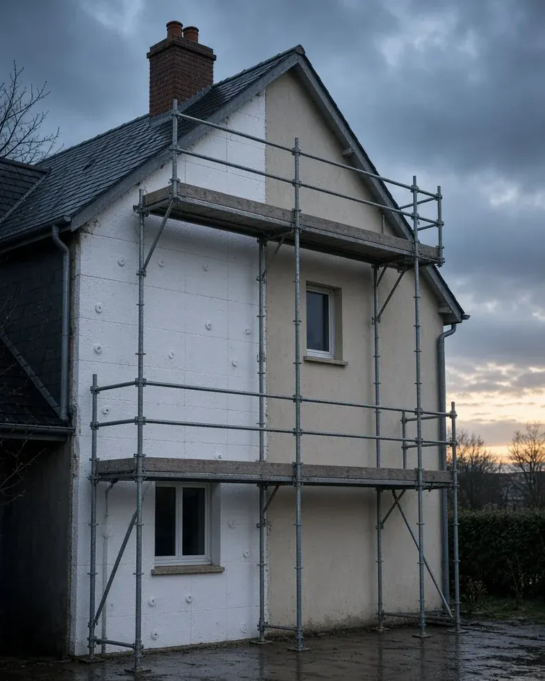

Isolation · Couvreur à Herblay-sur-Seine (95220)
Isolation thermique extérieure à Herblay-sur-Seine
Améliorez votre confort et réduisez vos factures en isolant vos murs par l’extérieur — sans perdre de place à l’intérieur !

- Prestation
- Isolation thermique extérieure
- Savoir-faire
- Isolation
- Localisation
- 39 chemin de Pontoise, 95220 Herblay-sur-Seine
- Prix
- Sur devis · devis gratuit
L’essentiel
Gagnez en confort, en style et en valeur !
L’isolation thermique par l’extérieur (ITE) est l’une des solutions les plus efficaces pour protéger votre maison contre le froid, la chaleur et l’humidité, tout en modernisant l’aspect de votre façade.
C’est aussi un excellent moyen de valoriser votre bien tout en réalisant des économies d’énergie significatives.
- Isolation haute performance, posée dans les règles de l’art
- Aucun impact sur l’espace intérieur
- Ravalement de façade inclus
Description du service
Nous réalisons une isolation thermique par l’extérieur (ITE) pour un confort optimal toute l’année.
L’ITE consiste à poser des panneaux isolants directement sur les murs extérieurs, puis à les recouvrir d’un enduit ou d’un bardage.
Résultat : une enveloppe thermique continue, sans ponts thermiques, qui protège toute la maison.
Chez H-Renovation, nous réalisons votre isolation extérieure de A à Z : du diagnostic énergétique, au choix des matériaux, jusqu’à la finition esthétique.
Comment on procède
Étapes de l’ITE
Préparation et nettoyage des murs
Pose des panneaux isolants (laine de roche, polystyrène, fibre de bois…)
Fixation mécanique + colle spéciale
Mise en place d’un enduit de finition ou d’un bardage (PVC, bois, zinc, composite…)
Traitement des points sensibles : encadrements, appuis de fenêtres, bas de mur
Ce que vous y gagnez
Les avantages de l’ITE
Jusqu’à 25% d’économie d’énergie
Isolation thermique et phonique renforcée
Aucun impact sur la surface habitable
Amélioration esthétique de la façade
Élimination des ponts thermiques
Valorisation immobilière immédiate
Éligibilité aux aides financières (MaPrimeRénov’, CEE…)
L’isolation extérieure, c’est LE choix malin pour un confort toute l’année et une maison comme neuve.
Contactez-nous pour un devis gratuit, et bénéficiez des aides en vigueur pour isoler votre maison sans vous ruiner !
Isolation thermique extérieure
Pourquoi faire appel à H-Renovation ?
Samuel Hortica et H-Renovation interviennent depuis Herblay-sur-Seine, du diagnostic jusqu’aux finitions.
Étude thermique gratuite et personnalisée
Conseils sur les matériaux et les aides disponibles
Équipe qualifiée RGE (Reconnu Garant de l’Environnement)
Matériaux durables, performants et esthétiques
Garantie décennale
À valider avec Samuel textes repris du site actuel, ajustés quand une mention posait problème
- La RE2020 s’applique aux constructions neuves, pas à la rénovation.
- Certificat RGE en cours de validité à fournir ; sans lui, retirer les mentions d’aides.
- Allégation environnementale générale retirée (directive européenne 2024/825).
- Attestation décennale à fournir (assureur, n° de contrat, zone couverte).
- MaPrimeRénov’ et CEE seulement si l’entreprise est certifiée RGE.
Isolation
Les autres prestations
- Isolation thermique intérieureAméliorez le confort de votre maison et réduisez vos factures grâce à une isolation performante par l’intérieur.
- ComblesAménagez ou isolez vos combles pour gagner de l’espace, améliorer votre confort thermique et valoriser votre maison.
- Combles perdusIsolez vos combles perdus pour améliorer immédiatement le confort thermique de votre maison et faire des économies d’énergie.
- Combles aménageablesTransformez vos combles en un véritable espace de vie confortable, lumineux et isolé, sans déménager.
- Isolation sous-sol et vide-sanitaireÉvitez les pertes de chaleur et l’humidité en isolant efficacement votre sous-sol ou vide-sanitaire.
Une fuite, une mousse, un doute ?
Appelez Samuel.
Décrivez ce que vous voyez : vous saurez quoi faire, et le devis est gratuit.